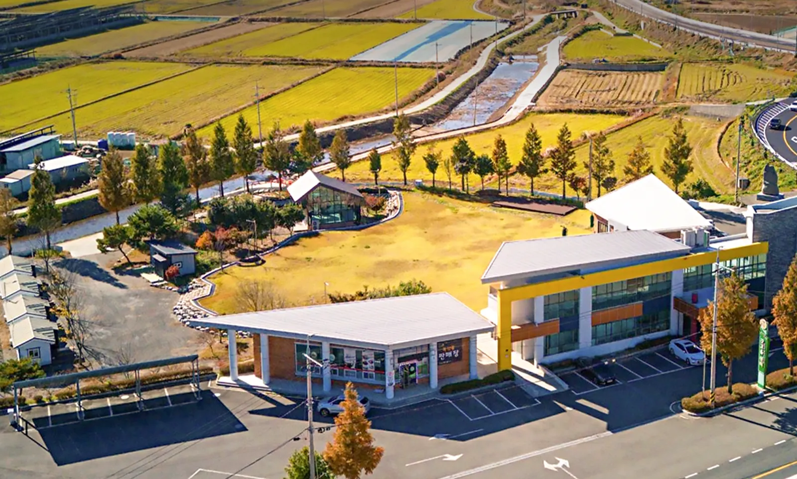
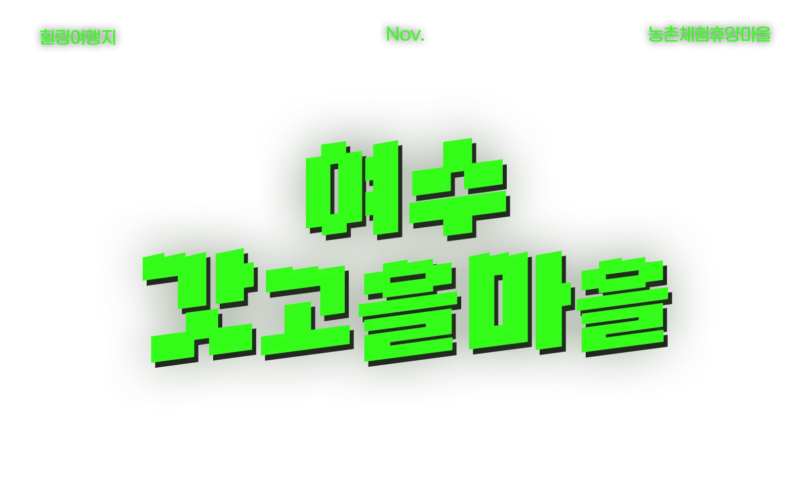
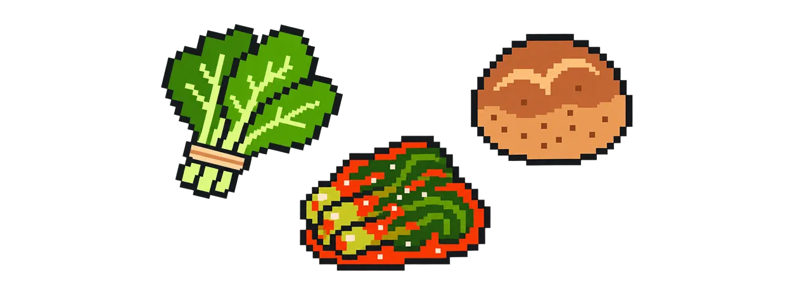
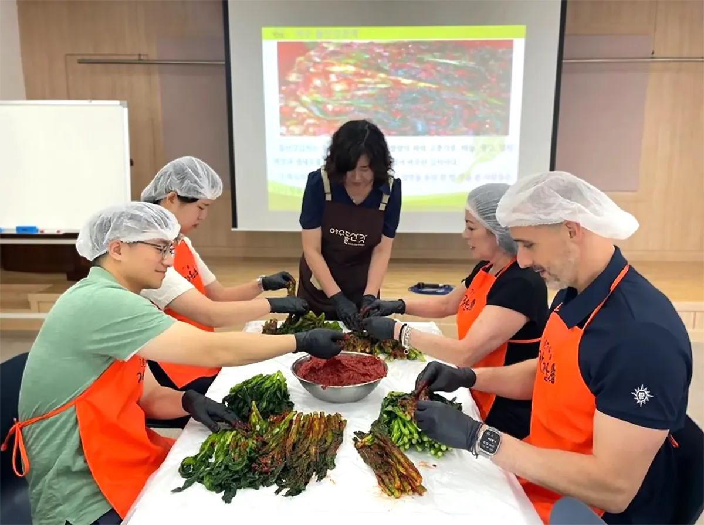
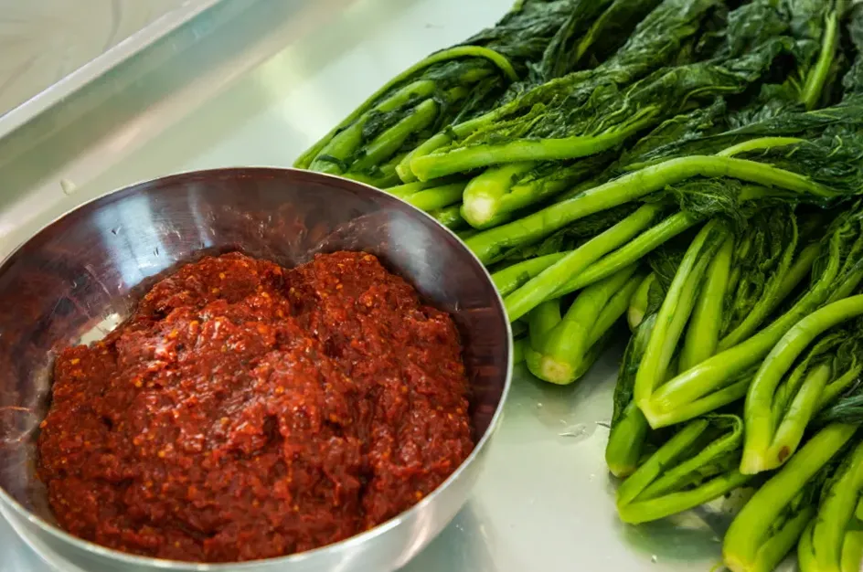
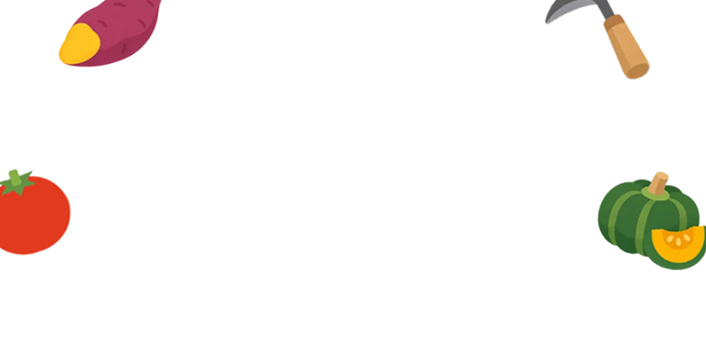
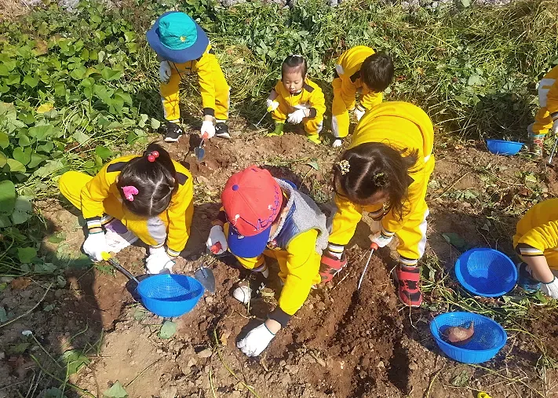
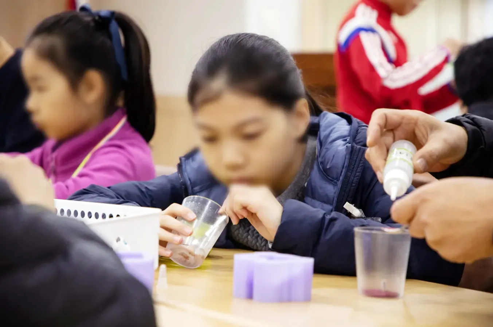
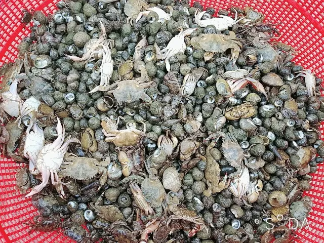

전남광주통합특별시 11월 농촌체험휴양마을 여수 갓고을마을
11월 힐링여행지, 여수 갓고을마을 농촌체험휴양마을


농촌체험휴양마을
전남광주통합특별시가 선택한
11월 농촌체험휴양마을은?
돌산갓으로 갓김치도 만들고 보리빵, 갓강정을 만들고 갯벌 체험까지?

전남광주통합특별시가 11월에 갈 만한 농촌체험휴양마을로 여수의 갓고을마을을 선정했어요.
바다가 있는 천혜의 자연경관과 함께 오감 만족 힐링 여행을 떠나볼까요?
전남광주 농촌체험휴양마을 선정이란?
지역의 농촌 자원과 특색 있는 체험 프로그램을 알리고, 농촌 관광을 활성화하기 위해 매달 대표 마을을 선정해 소개하는 사업
이색 김장 여행지
11월에 꼭 가봐야 할
이색 김장 여행지가 있다?
전남광주통합특별시의 11월 농촌체험휴양마을로 선정된 여수 갓고을마을은 남해안의 아름다운 자연경관과 지역 특산물을 활용한 다채로운 체험 프로그램을 즐길 수 있는 마을이에요.
여수 갓고을마을
여수 돌산에 자리한 갓고을마을은 어촌과 농촌이 어우러진 아름다운 풍광을 자랑하며, 돌산 갓김치로도 잘 알려져 있어요.
- 위치
- 여수시 돌산읍 향일암로 913 갓고을센터
- 예약·문의
- 061)644-6100
- 누리집
- www.gatgoeul.com
갓고을마을 매력포인트1
밭에서 식탁까지, 맛있는 갓김치 담그기
해풍을 맞고 자라 특유의 알싸한 맛과 향이 살아 있는 돌산갓으로 직접 양념을 버무리는 특별한 김장 체험을!


- 체험 소요 시간
- 1시간
- 참가비
- 별도 문의(갓김치 제공)

갓고을마을 매력포인트2
아이부터 어른까지 이색 체험이 가득
보리빵 만들기, 갓강정 만들기, 갓 천연 비누 등 남녀노소 누구나 즐길 수 있는 체험 프로그램이 가득해요.

출처: 갓고을마을농산물 수확 체험
- 감자 수확 체험
- 옥수수 수확 체험
- 고구마 수확 체험
- 표고버섯 따기 체험
- 방울토마토 수확 체험

출처: 갓고을마을실내 체험
- 보리빵 만들기 체험
- 단호박 초콜릿 만들기 체험
- 오란다 만들기 체험 키트
- 인절미 만들기 체험
- 천연 비누 만들기
- 표고 탕수육 만들기
- 강정 만들기

출처: 갓고을마을갯벌 체험
갯벌 생물을 직접 관찰하고 채취하며 살아 있는 자연과 환경의 소중함을 느껴보세요.
갓고을마을 매력포인트3
머물고 싶은 힐링 여행지
가족 단위부터 단체 여행객까지 고즈넉한 한옥 숙박부터 펜션까지 갓고을에 머물며 힐링해보세요.
100여 명을 수용할 수 있는 체험관이 있어 어린이집, 유치원, 학교나 회사가 단체 방문하거나 체험하기에도 좋아요.
시설
- 갓고을 숙박
- 풋살장
- 세미나실
- 족구장
- 산책로
- 돌산갓김치 판매장
- 잔디광장 등
11월 여행 추천
이런 분들께 추천!
- 주말을 이용해 색다른 가족 여행을 계획 중인 분
- 아이들에게 자연과 전통 식문화의 가치를 알려주고 싶은 보호자
- 여수의 진짜 향토 문화를 깊이 있게 느끼고 싶은 여행자
11월엔 여수 갓고을마을로 떠나보세요.